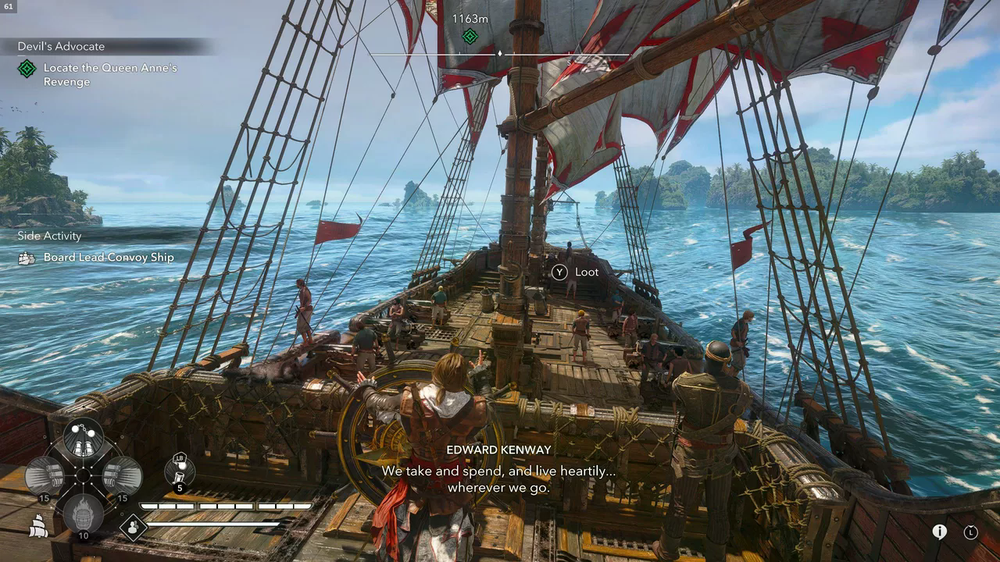
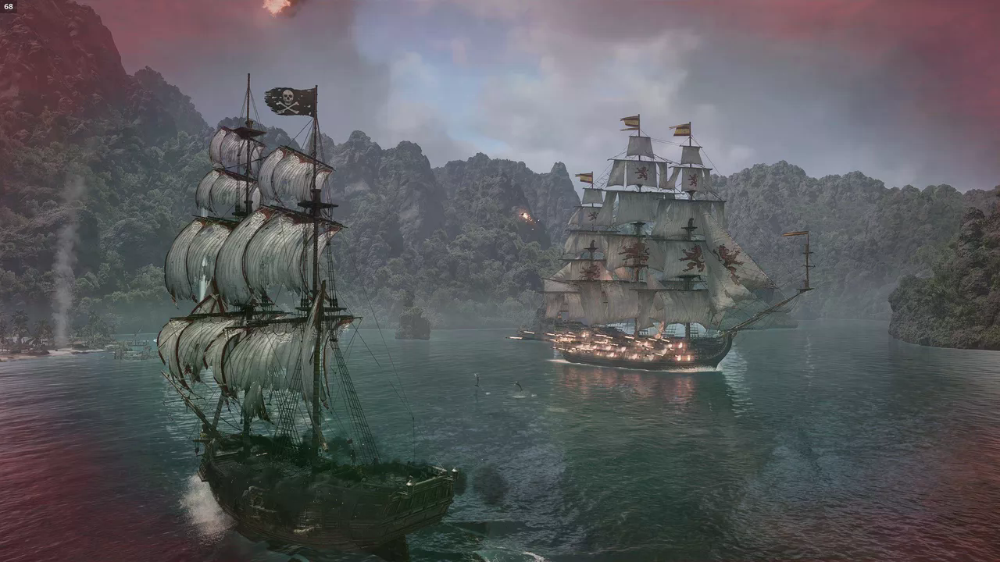
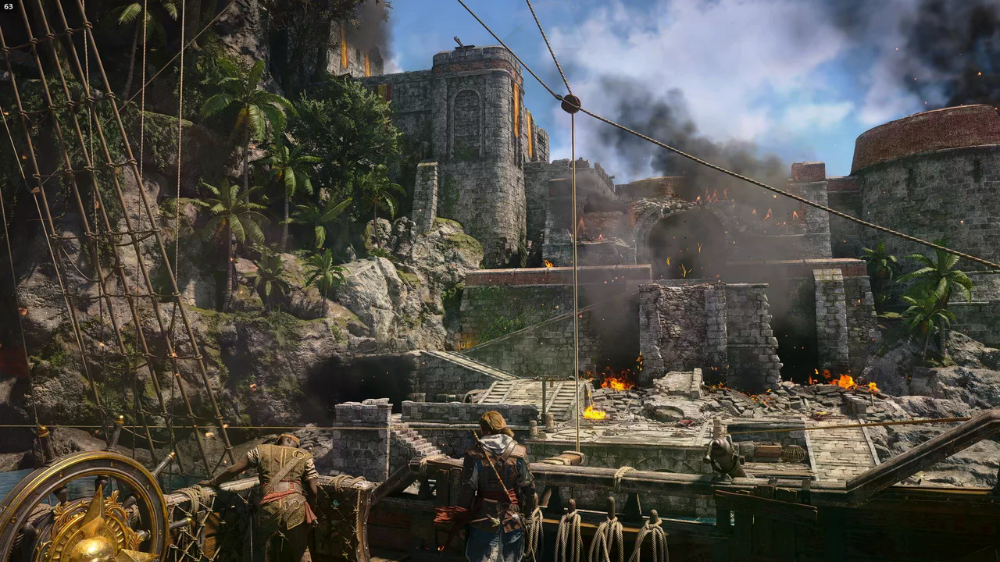
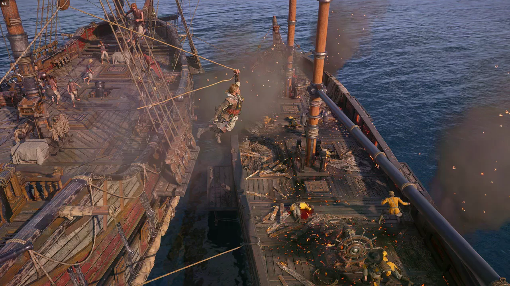
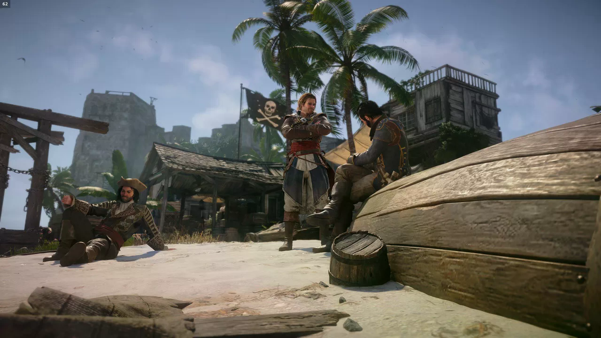

– Assassin's Creed IV: Black Flag Resynced İnceleme yazımızla, yenilenen akıcı deniz savaşlarına ve genişleyen macera yapısına taze bir bakış sunuyoruz.
Ubisoft’un Assassin’s Creed oyunlarına karşı hep orta seviyede bir ilgim olmuştu.
Yayınlanan ilk üç oyunu keyifle oynamış ama Prince of Persia serisini durduğu için
de biraz kötü gözle bakmıştım. İstanbul’da geçen Revelations ile biraz sıkılmaya
başlamış, 3. oyunu ise getirdiği yeniliklere (ve oyunun ilk kısmındaki şahane
twistine) rağmen sıkılmış bitirecek kadar oynayamamıştım. Fakat çoğu insanın olduğu
gibi benim de zayıf bir noktam var ve korsan temasına hayır demem mümkün değil.
Black Flag zamanında 7. nesil konsollar için yayınlanmış ve ardından 8. nesil için
çıkış isimlerinden biri olarak da adını bolca duyurmuştu. Şimdi seriye Assassin's
Creed IV: Black Flag Resynced ile yeniden dönüyoruz, bakalım bizi neler bekliyor.
Hem serinin en sevdiğim karakteri hem de en tırt Assassin olma hikayesine sahip olan
Edward Kenway ile maceramıza başlıyoruz. Eşine daha iyi bir hayat sunmak amacıyla
devlet destekli korsan (privateer) olarak açık denizlere açılan Edward, Havana
tarafında yelken açmışken kapıldıkları fırtına sırasında farklı bir gemi ve o
gemideki suikastçi ile karşılaşıyor. Ukala ve aşağılayıcı tona sahip olan Duncan
Walpole ile karşılaşmaları sonucu Walpole ölüyor ve Edward suikastçinin taşıdığı
değerli bilgiler karşılığında hızla para kazanabileceğini düşünerek onun
kıyafetlerini ve kimliğini alıyor.

Aslında dönek bir ajan olmaya karar veren Walpole’un suikastçilerin bilgilerini Templar grubuna satıp onlardan biri olmaya karar verdiğini görüyoruz. Ayrıca Observatory adında bir mekanın varlığını, buraya girmek için bir adam bulmamız gerektiğini ve kısa süre sonra da Assassin’lerin peşimizde olduğunu öğreniyoruz. Bir olay öbürünü kovalıyor, tutuklanıyoruz, kurtuluyoruz, kendi gemimizi çalıyoruz ve açık denizlerde devletler - korsanlar - tapınakçılar - suikastçiler arasındaki büyük mücadelenin ortasında zengin olma mücadelemiz başlıyor. Assassin's Creed IV: Black Flag Resynced, orijinal oyunun hem ana hikayesine hem de Animus kısımlarına el atmış ve ortaya daha rafine bir sonuç çıkmış. Normalde yeni sanal gerçeklik gözlüğünü denemek, bu yüzden zaman zaman gerçek dünyaya dönüp çeşitli işlemler yapmak falan yok artık. Oyun temposuna etkisi pek iyi olmayan görevlerdi ama konunun bir de modern dünya kısmı olmasını seviyordum. O bölümleri sallapati yapmaları kötü oluyordu ama hiç yapmamaları da biraz üzmedi değil. Yine de akıcılık açısından çok iyi olmuş. Sadece eskisinde “dur bakalım yeni gözlükle denersin” denen bölümlerin burada görünmez duvar varmış gibi davranması durumu göze batıyor.
"Altın olmayan bir dünyada, belki de kahraman olurduk!"
En başta Edward’a en tırt suikastçi olma hikayesi dememin sebebi tamamen hikayeye girişimiz yüzünden. Edward hatırı sayılır bir korsan olsa da sırf kapşonu taktı diye bütün yetenekleri elde etmesi kısmı bana 13 sene önce de garip gelmişti, şimdi de garip geliyor. Hele o hikayenin en başındaki “Hadi amcalara bi suikast nasıl yapılırmış ot yığını içinden göster” kısmı hala daha komik. Leap of Faith olayına hiç girmek bile istemiyorum. Aslında suikastçi olma hikayesi burası değil, oyun boyunca yaşadıkları olarak düşününce gerçekten güzel bir karakter ama işte, insan görmezden gelemiyor.

Sonuç olarak hikaye güzel, zaten Edward benim Ezio’dan bile fazla sevdiğim tek AC ana karakteri. O gıcık çok bilmiş karakterin hikaye boyu gelişimini görmek, etkileyici yan karakterler ile tanışmak falan çok keyifli. Ha yan karakterlerin genel olay örgüsü de tıpkı Edward’ın suikastçi yeteneklerini kapmasına benzer damdan düşer gibi oluyor ama olsun. Buna rağmen hikayesi tecrübe etmeye değer, yan görevleri ise bazen fazla uzasa bile güzel yazılmış bir oyun var elimizde. Modern dünyayı çok dibe çekmişler ama bunu yan karakter hikayeleri ile gayet güzel telafi etmişler. Orijinal oyunda içinizde kalan bir olay varsa onu bile burada halledebilirsiniz, o kadar diyeyim. Resynced ile birlikte parkur mekanikleri biraz elden geçirilmiş ve güzelleşmiş. Karakterin hareketleri eskisi kadar hantal değil ve tırmanmak istediğiniz yere biraz daha rahat ulaşabiliyorsunuz. Ama düzelmiş dediysem muhteşem bir şey beklemeyin, hala daha dümdüz bayrak direğine tırmanırken bir kademe yukarı zıplasın diye yukarı basarak zıplamasını söylediğim karakter kendini aşağıdaki savaşan korsanların arasına bırakabiliyor. Ben hala Unity kadar keyifli ve işe yarar bir parkur sistemi gelmemesine şaşırıyorum.
Dövüş mekanikleri de elden geçirilmiş ve dönemin modasına uygun bazı gereksiz eklentiler kaldırılmış. Dövüşürken düşman saldırılarını takip ediyor, uygun anlarda blok yapıp karşı saldırılar koyuyor, yeteneklerinizi kullanarak rakibi alt ediyorsunuz. Daha önce düşmanı silahsızlandırma, rakip silahını alıp kendisine karşı kullanma, gizli bıçaklarla saldırı gibi eylemler kalkmış ama dövüş daha akıcı ve seri biçimde gerçekleştiğinden aşırı göze batmıyor. Dönemin “QTA” modasını arkasında bırakmaya karar veren Resynced aslında iyi yapmış ama eskiden birebir mücadele ettiğimiz hayvanlara şimdi parry atmak bir garip geliyor. Ormanda Jaguar bizi ısırmaya çalışıyor biz hayvanın ağzına parry atıyoruz. Yine de dövüşleri sevdim. Çıkarılan mekaniklerin açığını kapamak için de önceden çok geç edindiğimiz bazı eşyaları (ipli ekipman gibi) daha erken almamızı sağlamışlar. Korsanların olduğu oyunda savaşlar yalnızca karada değil, denizde de mücadeleler yaşıyoruz. Gemimiz Jackdaw ile açık denizlerde yol alırken gözümüze kestirdiğimiz bir gemi olursa paldır küldür saldırabiliyoruz. Yan toplar, ön - arka toplar, patlayıcı variller ve yetmediyse havan topları ile düşmana nefes aldırmadan bombardıman altına alıyoruz. Yeterli hasarı verince gemiyi direkt batırmak yerine borda edip tayfayı indirerek daha fazla kazanç elde edip çeşitli avantajlar sağlayan seçimler yapabiliyoruz. .

Gemi savaşlarında rüzgar durumuna göre gemiyi kontrol etmek zorlaşıyor ama normalde de harika manevralar yapabilen bir araç değil. Aldığımız yeni subayların görevlerini tamamlayarak daha etkili hale gelmesini sağlayabiliyoruz ama günün sonunda bütün olay bizim yeteneğimize bağlı. Bu savaşlarda canımı sıkan birkaç şey var. Öncelikle bordalama sistemi o kadar lineer yapılmış ki ben savaşa girmeden düşman gemisine atlayıp tüm düşmanları kessem bile gemiyi ele geçiremeyebiliyorum. Herkes ölüyor ama moralin dibinde bir parça var, git bayrağı kes diyor çıkıyorum ama bayrak kesilmiyor. Tamam o zaman diyip gemiden atlıyorum, tüm tayfa tekrar spawn olup ateş etmeye başlıyor. Borda edip zafer kazandıktan sonra gelen animasyonların da yıllar önceki Sid Meier's Pirates!’dan farklı olmaması komik geliyor bana, özellikle arka arkaya bir sürü savaşa girip çıkınca. Deniz savaşlarının bir versiyonu da kale baskınları. Önce denizden kalenin toplarını ve savunmasını aşıyor, bu sırada gelen diğer gemileri tepeliyorsunuz. 3-4 gemi + kale ile kapışırken bir gemiyi borda ederseniz diğerleri kibarca bekliyor saldırmadan. Sonra kapıları açılan kaleye yanaşıp komutanı bulana kadar savaşıyorsunuz ve kale sizin oluyor, bu da harita üzerinden filonuza görev verebileceğiniz yeni alanı açıyor. Aniden çıkan fırtınalardan kaçma, filoları ele geçirme gibi su üstü etkinlikleri de mevcut.Denizde ayrıca zıpkın ile büyük balık avlama ve çan (bildiğiniz çan) ile su altında hazine arama sekansları da var. Deniz etkinlikleri oldukça zengin ve eğlenceli.

Oyun dünyasının en gıcık olduğum görevleri karakterlerin önümüzden yürüyüp durmadan
konuştuğu, koşsan yavaş yürüsen hızlı kaldığı sekanslar olsa gerek. Assassin's Creed
serisi ise bu taktiği en çok kullanan oyunlardan birisi. Black Flag Resynced
içerisinde de bolca olan bu tarz takip görevleri ise genel olarak çekilebilir halde
olsa da sorunları var. Bir tuşla karakteri otomatik takip edebiliyoruz ama bazen NPC
yürümekten vazgeçiyor. Ya da karakter duruyor, karşıdan biri gelip tepki verecek ama
vermiyor. Muhtemelen benim farklı bir açıdan yürümem sebebiyle trigger noktasını
kaçırmam ile yapay zeka duruyor ve kimi zaman yürüyüşün en başından başlamak zorunda
kaldığım durumlar oluyor. Düşmanı gizlice takip ederken sağ çatı yerine sol çatıdan
gittim diye görev mi bozulur? Bozuluyor. Ama yine de elden geçirilmiş, mesela yürüme
aralarına checkpoint koymuşlar, alakasız yerlerden düşman sizi görmüyor, hatta bazen
önündeyken bile görmüyor. Ben hala bu sistemin azalarak bitmesi taraftarıyım.
Assassin's Creed IV: Black Flag Resynced’in daha ilk anda beni yakaladığı nokta
korsan teması ama ikincisi ise grafikler. Oyun çok güzel gözüküyor! 13 yıl önceki
oyun da gayet iyi gözüküyordu tamam ama 13 yıl geçti! Oyun grafikleri günümüze uyum
sağlamak adına çok güzel bir şekilde yenilenmiş. Zaten ortamlar çok güzel, bir de
grafikler iyi olunca bakmaya doyamıyor insan. Gemide fotoğraf çekmek için kaç kere
bir adaya girdim, kaç kere su altında resim çekerken köpek balığı kaptı anlatamam.
Karakter modelleri harika, animasyonlar çok güzel ve pürüzsüz, ara sahneler
Shadows’dan çok daha güzel gözüküyor ve ışıklandırma efektleri ile çevre şahane
gözüküyor..



Yorum Yap